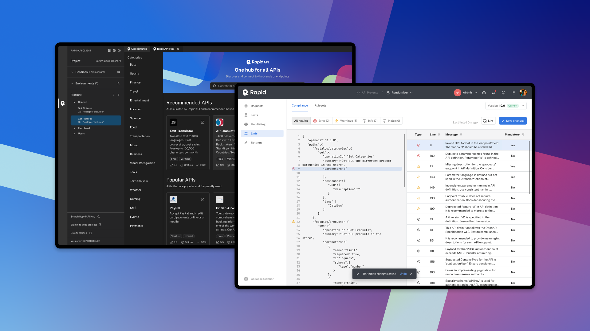
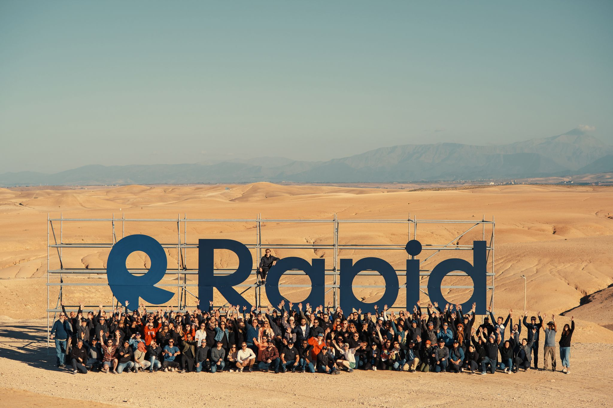
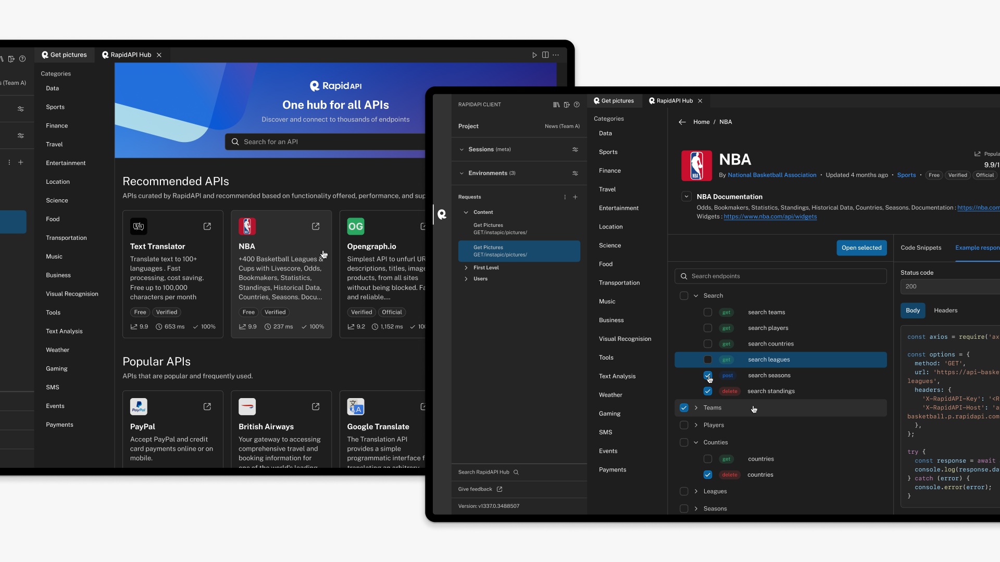

Rapid’s API Hub provides a seamless, connected experience to design, test, monitor and publish APIs.
Visit Rapid’s API Hub
Designing, testing and monetising APIs can be very difficult. Developers have to use multiple platforms and applications to make sure they get a quality API into the hands of their users. This takes a long time and as a result, slows the development time to deliver great products.
With Rapid’s API Hub, developers use the same simplified workflow for every step of their API journey, enabling organisations to accelerate API delivery while providing a streamlined and more efficient coding experience.
As the owner of the Developer Tools Experience at Rapid, I spearheaded a transformative journey in enhancing the efficiency and effectiveness of our developer tools ecosystem. My role involved overseeing the entire lifecycle of developer tools, from conception to implementation. Through strategic planning and collaboration with cross-functional teams, I facilitated the creation of intuitive and powerful tools that empowered our developers to streamline their workflows and boost productivity.
API development involves navigating a vast technical landscape, requiring precise data placement for seamless functionality. The learning curve can be steep, particularly for those without a formal computer science background. Despite enhancements from Rapid's tools to house most features of the API workflow, the existing design architecture opted to compartmentalise features rather than aligning with specific user goals, addressing only half the problem.
To better grasp our users' needs, we ran remote tests with different user groups identified in past studies. I created empathy maps to organise these insights into practical tools. The results revealed a notable challenge in moving between tasks in a user journey, making it tough and counterintuitive, hindering users from reaching their goals. This led to a central hypothesis: users navigating a goal-oriented architecture would complete tasks more efficiently, giving us better visibility to guide them through our conversion funnel and increase annual recurring revenue.
Empathy map using data sourced from initial user research and testing sessions.
By leveraging artefacts such as our empathy maps, I acquired the insights and guidance necessary to effectively communicate the problem to business leaders within the bounds of a lean and agile methodology. This approach empowered me to construct a persuasive case for redesigning the architecture, emphasising a model that promotes conversion through usability, all within a staged and iterative release model.
Additionally, the artefacts offered clear guidance for prioritising future initiatives. I worked with various product managers throughout the business to provide context for upcoming initiatives aimed at solving our problem. This led to the initiation of a strategy for continuous development. To ensure a smooth progression, we redesigned small issues within existing workflows simultaneously with the planning of larger, overarching challenges. This approach ensured that while Product and Design identified optimal paths, Engineering could still deliver effectively.
Handover documentation example for a micro issues highlighted via testing. Processes to create design such as this would only take a matter of days due to using existing design system components.
Flow documentation example for a macro issue used to align stakeholders and provide deeper level analysis to inform further strategic planning, ideation and engineering focus.
Our team was spread across 3 distinct timezones, San Francisco, Central Europe and Tel Aviv. This presented both challenges and learning experiences. Coordinating meetings and collaborative efforts required meticulous scheduling to accommodate time differences. Embracing various collaboration platforms and establishing well-defined communication protocols became essential in overcoming the geographical barriers.
Furthermore, engaging with diverse perspectives and work cultures significantly enhanced my grasp of global dynamics, promoting adaptability and nurturing a more inclusive problem-solving approach. Effectively coordinating tasks across different time zones not only fortified my organisational skills but also cultivated resilience and patience in managing the intricacies inherent in global collaboration.

All of the team in a single timezone at our 2023 annual kick off in Marrakech.
In order to integrate our product architecture into the workflow of API developers, an update to the structure or navigation of the product would not be sufficient to engage users. It was essential that existing features coexist seamlessly within Integrated Development Environments (IDEs), such as Visual Studio Code, providing seamless feature parity.
Designing for IDEs like Visual Studio Code presents a unique set of challenges. While these tools offer features to allow users to write code faster, the complexity of their interfaces can be overwhelming. Striking a balance between delivering robust functionality and maintaining a user-friendly experience required careful consideration, particularly when regarding user theming and interaction behaviours.

The Rapid API Hub seamlessly integrating with Visual Studio Code, enabling users to search for and request from APIs without having to leave their developer environment.
After a year of iterative design, rapid experienced a 30% increase in conversion rates across all user segments.
Upon release, Rapid’s IDE extensions witnessed the highest daily active user rate among platforms, accumulating 100k users in the first week alone. In the Visual Studio Code marketplace, Rapid's extension swiftly became the most popular that month.
Transitioning to Rapid, I encountered resourcing constraints that necessitated a more streamlined discovery period. This forced me to craft hypotheses aimed at delivering the most significant impact for the business — every decision had to be strategic. Developing a lean, macro perspective on our product was pivotal not only for justifying my design decisions but also for championing design thinking throughout the organisation
I've come to realise that attempting to grasp every technical detail simultaneously can be overwhelming and time consuming, leading me to prioritise and concentrate on areas where I can truly add value. This strategic focus has proven to be an effective approach, ensuring that my efforts are directed towards impactful contributions. Navigating the challenges of a global team has taught me the importance of recognising my limitations, strategically prioritising tasks, and acknowledging the strengths and expertise of team members.
At Rapid, Urgency and Rigour stand as core values. Balancing the urgency of meeting deadlines with a dedicated commitment to a thorough design process has proven to be a challenging yet crucial lesson. The ability to expedite decision-making without compromising quality is a skill refined through experience and a discerning sense of prioritisation. Recognising the subtle nuances between when to move swiftly and when to take deliberate, thoughtful steps has been integral to continuously delivering value as a design team while supporting the needs of wider business. These experiences emphasise the importance of optimising for efficiencies while championing a comprehensive, user-focused design process, ultimately resulting in timely and impactful outcomes.